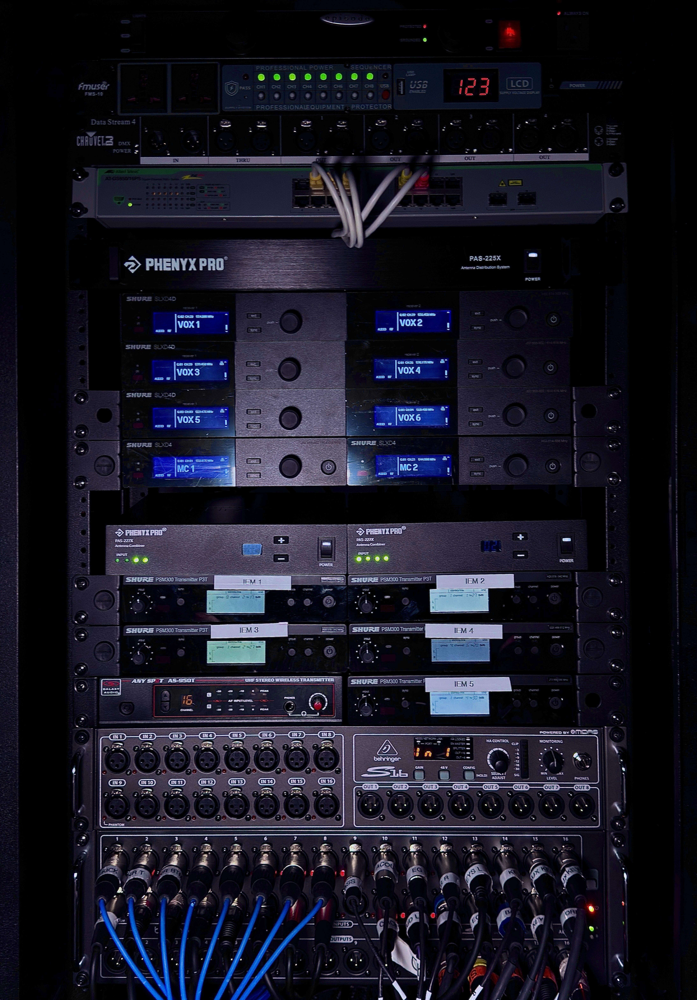

Audio · Rack integration
Wireless & monitoring rack
Integrated wireless microphones, in-ear monitoring, audio distribution, and networked control in a touring-ready rack.
A photo journal of the network and audiovisual systems I install, support, and bring to life.

Integrated wireless microphones, in-ear monitoring, audio distribution, and networked control in a touring-ready rack.
images/, then duplicate a project card in index.html.Document the system, the work, and the finished result here.